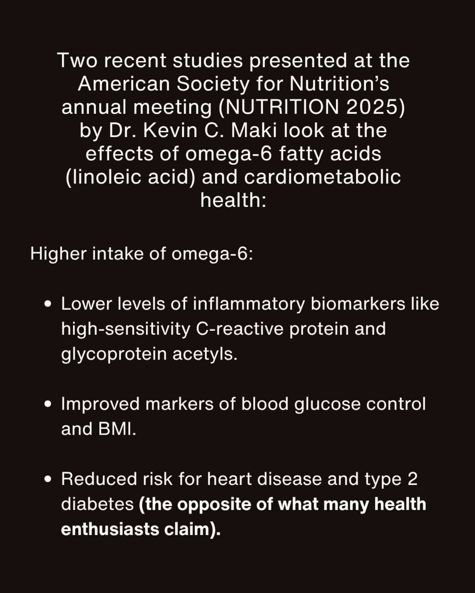
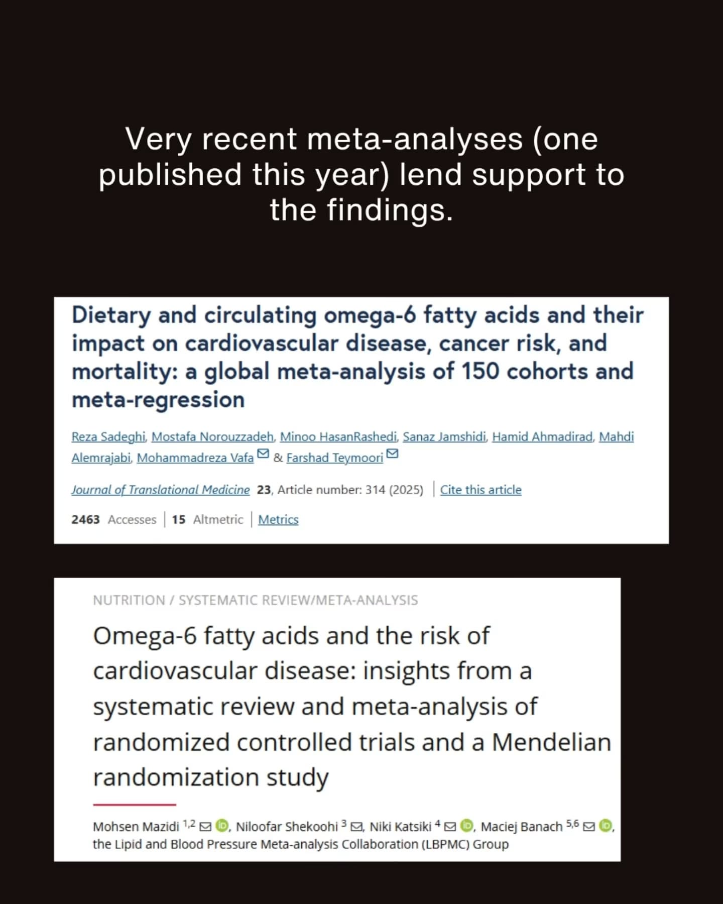
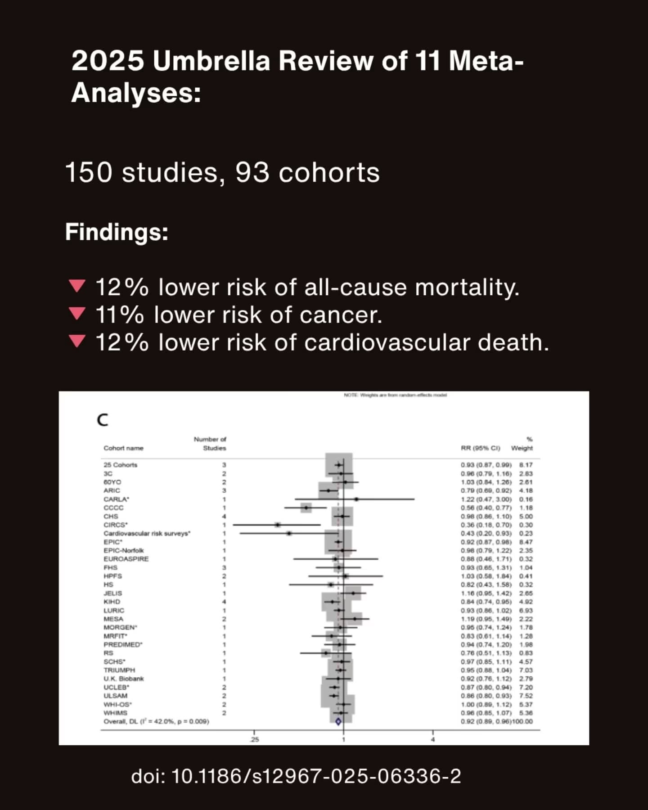

There are 3 things in the world that, above all others, divide groups and start wars: 1) political leanings, 2) religion, 3) seed oils (Nutrition as a subject, really).
Omega-6 fats [especially linoleic acid (LA) found in nuts, seeds, eggs, and vegetable oils] have long been criticized for their potential role in promoting chronic inflammation. The concern stems from LA’s biochemical conversion into arachidonic acid (AA), a precursor to eicosanoids like prostaglandins and leukotrienes, which can drive inflammatory responses.
Very recent evidence tells a much more nuanced story.
New observational research presented at NUTRITION 2025 by Dr. Kevin Maki found that individuals with higher blood levels of linoleic acid had:
- Lower levels of inflammation markers (CRP, glycoprotein acetyls)
- Better glucose control and healthier BMI
- Reduced risk factors for cardiovascular disease and type 2 diabetes
Recent supporting meta-analyses (Sadeghi et al., 2025; Mazidi et al., 2022) reinforce this:
- Higher dietary and circulating omega-6 levels were linked to lower risk of CVD, cancer, and all-cause mortality.
- Omega-6 supplementation showed neutral-to-beneficial effects in clinical trials, with nuance around AA-specific metabolites.
Context matters. Linoleic acid, as an essential nutrient, should not be considered in isolation (no one is drinking seed oils straight from the bottle). Whole food sources (walnuts, sunflower seeds, tofu, and eggs) bring essential fatty acids along with fiber, protein, and micronutrients.
Bottom line - The fear surrounding omega-6 fatty acids is largely unsupported by current (and past) high-quality data. When consumed as part of a balanced, whole-food diet, linoleic acid appears to be cardioprotective, not inflammatory.




